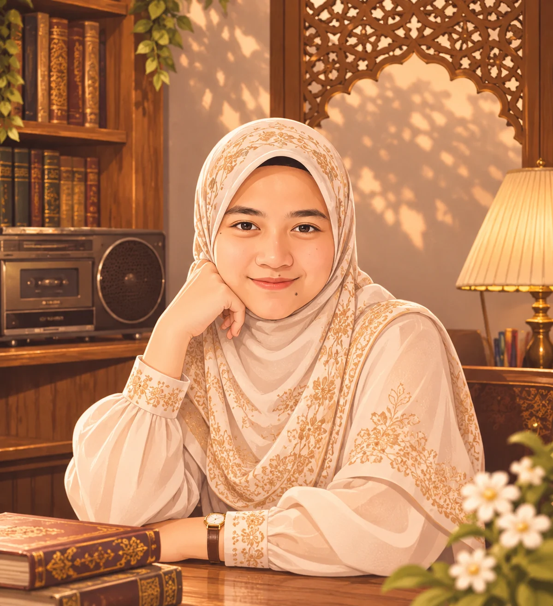
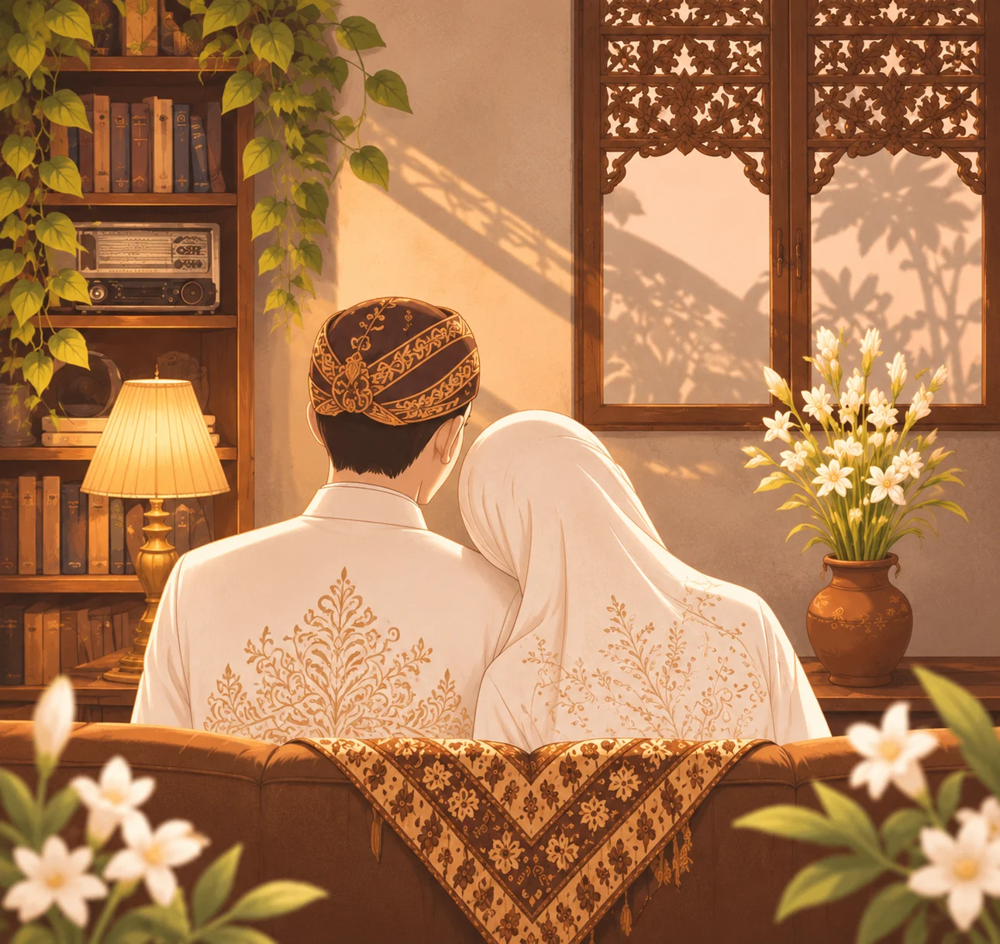
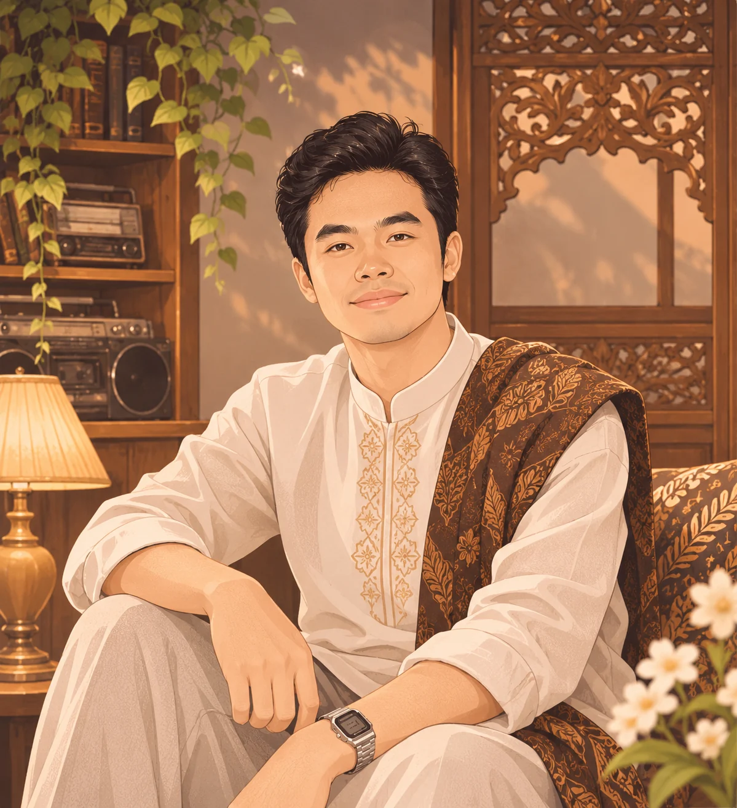

THE BRIDE
Aulia, MBBCh
Putri ketiga dari Bapak Peltu Moch Syaiful Arifin (Alm.) dan Ibu Erna Djatmikoningrum
Sabtu, 21 November 2026

THE STORY BEGINS HEREDengan memohon rahmat dan ridho Allah Subhanahu Wa Ta’ala, tanpa mengurangi rasa hormat, kami bermaksud mengundang Bapak/Ibu/Saudara/i untuk hadir dan memberikan doa restu pada acara pernikahan kami.
Yang akan mengikat janji suci dalam kasih dan kebersamaan.


وَمِنْ اٰيٰتِهٖٓ اَنْ خَلَقَ لَكُمْ مِّنْ اَنْفُسِكُمْ اَزْوَاجًا لِّتَسْكُنُوْٓا اِلَيْهَا وَجَعَلَ بَيْنَكُمْ مَّوَدَّةً وَّرَحْمَةً ۗ اِنَّ فِيْ ذٰلِكَ لَاٰيٰتٍ لِّقَوْمٍ يَّتَفَكَّرُوْنَ
“Di antara tanda-tanda (kebesaran)-Nya ialah bahwa Dia menciptakan pasangan-pasangan untukmu dari (jenis) dirimu sendiri agar kamu merasa tenteram kepadanya. Dia menjadikan di antaramu rasa cinta dan kasih sayang. Sesungguhnya pada yang demikian itu benar-benar terdapat tanda-tanda (kebesaran Allah) bagi kaum yang berpikir.”
QS. Ar-Rum [30]: 21 · Terjemahan Kementerian Agama RI
21 November 2026
Insyaa Allah, dengan memohon rahmat dan rida Allah SWT, kami mengundang Bapak/Ibu/Saudara/i untuk memberikan doa restu.
Islamic Center Kota Madiun
Jl. Sumatra No. 6–10, Kota Madiun
“May this day be the beginning of a beautiful forever.”
Mohon konfirmasi kehadiran dan tinggalkan doa terbaik untuk kami.
Merupakan suatu kehormatan dan kebahagiaan bagi kami apabila Bapak/Ibu/Saudara/i berkenan hadir untuk memberikan doa restu kepada kami. Atas kehadiran dan doa restunya, kami mengucapkan terima kasih.